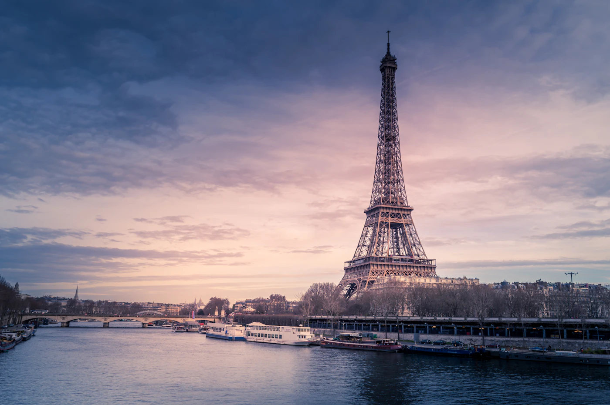

Reiseführer / Paris
Paris — beste Reisezeit, Flughafen, Sehenswürdigkeiten

Wann nach Paris reisen — die beste Reisezeit
Frühling (April–Juni) und früher Herbst (September–Oktober) sind am angenehmsten — milde Temperaturen, weniger Menschenmassen als im Sommer und längere Tage zum Spazieren. Juli und August sind warm und am touristischsten, und viele lokale Restaurants schließen im August wegen der Sommerferien. Der Winter ist kalt und feucht, aber mit kürzeren Warteschlangen vor den Museen und niedrigeren Unterkunftspreisen.
Welchen Flughafen wählen und der Weg ins Zentrum
Paris hat zwei Flughäfen: Charles de Gaulle (CDG), größer und weiter entfernt (etwa 25 km nördlich, RER-B-Zug ins Zentrum in 35-50 Minuten), und Orly (ORY), näher am Zentrum (etwa 13 km südlich, Orlyval + RER B oder Bus, insgesamt etwa 35-40 Minuten). Für günstigere Flüge von Billigfluggesellschaften lohnt sich auch ein Blick auf Beauvais (BVA) — es liegt über 80 km entfernt, und die Busfahrt ins Zentrum kann über eine Stunde dauern, sodass der Preisunterschied des Tickets diese Zeit und die Transportkosten aufwiegen sollte.
Was eine Reise nach Paris kostet — Richtpreise
- Ticket für den Eiffelturm (Aufzug zur Spitze) — etwa 28-35 € je nach Etage; das Treppensteigen bis zur zweiten Etage ist die günstigere Option (etwa 11 €) und oft mit kürzerer Warteschlange.
- Louvre — etwa 22 €, kostenlos am ersten Sonntag des Monats außerhalb der Saison (aktuellen Kalender vor der Reise prüfen) — Online-Terminbuchung obligatorisch.
- RER-Zug vom Flughafen ins Zentrum — etwa 11-13 € pro Person einfache Fahrt.
- Essen in einem Bistro abseits der Touristenzonen (z. B. im Viertel Marais oder Belleville) — 15-22 € pro Person, während Lokale rund um den Eiffelturm und die Champs-Élysées in der Regel 30-50 % teurer sind für ein ähnliches Angebot.
Sehenswürdigkeiten in Paris in 3 Tagen
- Eiffelturm und Trocadéro — der beste Blick auf den Turm ist vom Trocadéro-Platz aus, besonders in der Abenddämmerung.
- Louvre — buche einen Termin im Voraus, nutze den weniger bekannten Eingang (Carrousel du Louvre), um die größte Warteschlange an der Pyramide zu vermeiden.
- Notre-Dame und Île de la Cité — die Kathedrale befindet sich nach dem Brand noch immer in der Renovierungs-/Öffnungsphase einzelner Bereiche, prüfe den aktuellen Zugangsstatus vor dem Besuch.
- Montmartre und Sacré-Cœur — am besten früh morgens vor den Menschenmassen, die engen Gassen rund um die Place du Tertre sind selbst eine Attraktion.
- Seine — Spaziergang oder Bootsfahrt (Bateaux-Mouches) — eine gute Möglichkeit, in kurzer Zeit mehrere Sehenswürdigkeiten zu sehen, besonders abends, wenn sie beleuchtet sind.
Praktische Tipps vor der Buchung
- Dokumente — Frankreich gehört zum Schengen-Raum; prüfe die Einreisebestimmungen für deine Staatsangehörigkeit vor der Reise.
- Fahrkarte für den öffentlichen Nahverkehr — die Karte „Paris Visite" oder die mehrtägige Navigo-Karte lohnt sich oft, wenn du mehr als 3-4 Metrofahrten pro Tag planst.
- Vorausbuchungen — Louvre, Versailles und beliebte Restaurants sind in der Saison oft schon Tage im Voraus ausgebucht, besonders am Wochenende.
Plane deine Reise nach Paris mit SKLOPI →